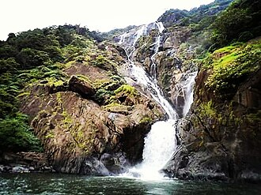

Goa (/ˈɡoʊə/ GOH-ə;[10] Konkani: [ɡõːj]; Portuguese: [ˈɡoɐ] ⓘ) is a state on the southwestern coast of India
within the Konkan region, geographically separated from the Deccan highlands by the Western Ghats. It is
bordered by the Indian states of Maharashtra to the north and Karnataka to the east and south, with the Arabian
Sea forming its western coastline. It is India's smallest state by area and fourth-smallest by population.
Panaji (also known as Panjim) is the state's capital, while Vasco da Gama is its largest city by population.
The state's official language, spoken by the majority of its inhabitants, is Konkani.
